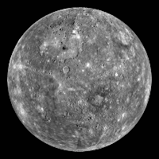
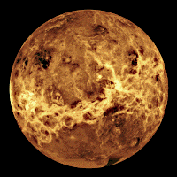
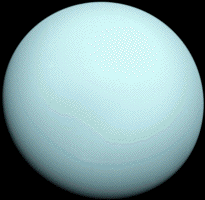
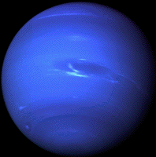

| Mercury | Venus | Uranus | Neptune | |
|---|---|---|---|---|
| Images of 4 Planets |  |  |  |  |
| Fact #1: Rank of Weights | Mercury has the lowest mass in this group, weighing in at only 0.33010 x 1024 kg. | Venus has the second lowest mass, weighing in at 4.8673 x 1024 kg. | Uranus has the second greatest mass, weighing in at 86.811 x 1024 kg. | Out of the 4, Neptune has the greatest mass, weighing in at 102.409 x 1024 kg. |
| Fact #2: Volume of Giants | Mercury has the smallest volume at just 6.083 x 1010 km3. | Going down the list, Venus has the second smallest volume at 92.843 x 1010 km3. | Surprisingly, despite not being the furthest planet away from the Sun, Uranus holds the largest volume of the quartet at 6,833 x 1010 km3. | Neptune has the second largest volume of the 4 planets at 6,254 x 1010 km3. |
| Fact #3: Packing Planets | On the contrary, Mercury has the biggest mean density at 5,429 kg/m3. | Not too far away, Venus has the second biggest mean density at 5,243 kg/m3. | Next up, Uranus has the smallest mean denisty at 1,270 kg/m3. | To end this off, Neptune has the second smallest mean density at 1,638 kg/m3. |
| Fact #4: Moon = Satellite? | Mercury has no natural satellites. Leading theory here is that the Sun's gravitational pull would have pulled it away. | Venus has no natural satellites either. A leading hypothesis believes Venus once had a moon, but an impact that managed to reverse this planet's orbit caused the moon to crash into the planet. | Uranus has the most natural satellites, numbering in at a total of 28 moons. | After that, Neptune's natural satellites has a total of only 16 moons. |
| Fact #5: Like Night and Day | Due to it's close proximity to the Sun, Mercury has the longest length of day at 4,222.6 hours. | Next to that, Venus has the second longest length of day at 2,802 hours. | On the other side, Uranus has a length of day at just 17.24 hours. | The shortest length of day clocks in at only 16.11 hours with Neptune. |
| Fact #6: Relative to Earth? | Getting warmer, Merucry has a distance away from Earth measured to roughly 77.3 x 106 km to 221.9 x 106 km | Being a closest neighbor, Venus has a distance away from Earth at just 38.2 x 106 km to 261 x 106 km | Next to that, Uranus has a distance away from Earth at 2,580.6 x 106 km to 3,153.5 x 106 km | Being so far out there, Neptune has a distance away from Earth set at a ranging 4,319 x 106 km to 4,711 x 106 km |
| Fact #7: Discoveries as old as Time | Mercury's discoverer has been lost to time, but it's date of discovery was likely in a prehistoric period. | Venus's discoverer has been lost to time too, but it's date of discovery was likely in a prehistoric period as well. | Uranus's discovery was made by William Herschel on March 13, 1781. | Neptune's discovery was made by Johann Gottfried Gallebased on predictions by John Couch Adams and Urbain Leverrier on September 23, 1846. |